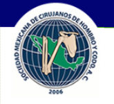
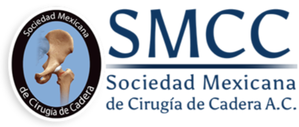
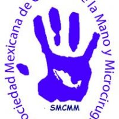

Revista AOM
Acta Ortopédica Mexicana
Artículos más leídos
Sociedades Afines
Consejo Mexicano de Ortopedia y Traumatología A.C.
Asociación Mexicana de Cirugía Reconstructiva, Articular y Artroscopía
Asociación Mexicana de Cirujanos de Columna, A.C.
Federación Mexicana de Colegios de Ortopedia y Traumatología A.C.

Sociedad Mexicana de Cirujanos de Hombro y Codo, A.C.

Sociedad Mexicana de Cirugía de Cadera, A.C.
Sociedad Mexicana de Pie y Tobillo A.C.
sociación Mexicana de Metabolismo Óseo y Mineral A.C.
Sociedad Mexicana de Ortopedia Pediátrica

Sociedad Mexicana de Cirugía de la mano y Microcirugía
Academia Nacional de Medicina de México
Academia Mexicana de Cirugía, A.C.